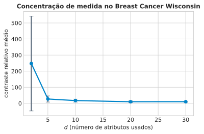
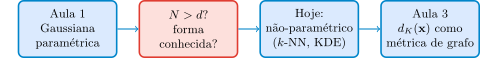
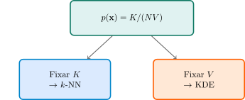
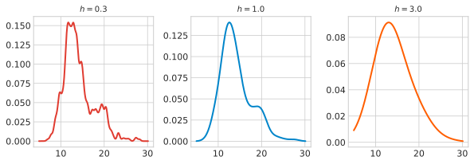
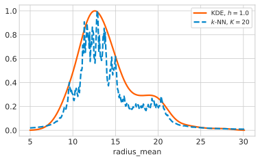
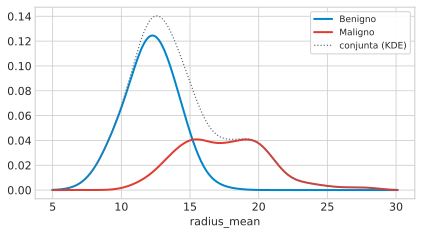

Aula 2: Vizinhos Mais Próximos, Maldição da Dimensionalidade e KDE
Aprendizado Não Supervisionado
Marcos M. Raimundo — Instituto de Computação, UNICAMP
2026-08-26
Abertura — O Que Fazer Sem Forma Paramétrica, e Sem \(N \gg d\)
Da Aula 1 Para Hoje
Aula 1: assumir Gaussiana, ajustar \(\hat{\boldsymbol\mu}, \hat\Sigma\), usar Mahalanobis. Ressalva anunciada: \(\hat\Sigma\) exige \(N>d\) — e piora conforme \(d\) cresce.
Hoje: duas perguntas.
- Por que “alta dimensão” quebra a intuição geométrica?
- Sem assumir nenhuma forma para \(p(\mathbf{x})\), como estimar densidade?
O Plano de Hoje
- Maldição da dimensionalidade — por que a intuição de 2–3 dimensões falha.
- Um resultado geral, \(p(\mathbf{x})=K/(NV)\).
- \(k\)-vizinhos-mais-próximos e KDE — duas leituras do mesmo resultado.
- Por que nenhum dos dois escapa da maldição — ponte para a Aula 3.

A Maldição da Dimensionalidade, Geometricamente
Volume que se Esconde na Casca
“if we divide a region of a space into regular cells […] the number of such cells grows exponentially with the dimensionality” — PRML, p. 121
> “in spaces of high dimensionality, most of the volume of a sphere is concentrated in a thin shell near the surface” — PRML, p. 37
Onde Mora o Volume, Por Dimensão
Em \(D=100\), quase todo o volume mora nos últimos 5% do raio.
O Mesmo Efeito, do Ponto de Vista de um Vizinho
“the expected edge length will be \(e_p(r)=r^{1/p}\). […] to capture 1% or 10% of the data […] we must cover 63% or 80% of the range […] Such neighborhoods are no longer ‘local.’” — ESL, p. 22
p= 1: cobrir 10% da amplitude p/ capturar 10% dos dados
p= 2: cobrir 32% da amplitude p/ capturar 10% dos dados
p= 10: cobrir 79% da amplitude p/ capturar 10% dos dados
p= 30: cobrir 93% da amplitude p/ capturar 10% dos dadosMais Perto da Borda do que de Qualquer Vizinho
“The median distance from the origin to the closest data point […] For N = 500, p = 10, \(d(p,N)\approx 0.52\), more than halfway to the boundary.” — ESL, pp. 22–23
Importante
Com \(N=500\) pontos, \(D=10\): o vizinho mais próximo da origem está, em mediana, mais perto da fronteira do espaço do que de qualquer outro ponto.
Contraste Relativo: Quando “Vizinho Próximo” Deixa de Significar Algo
\[\text{contraste} = \frac{\text{dist}_{\max}-\text{dist}_{\min}}{\text{dist}_{\min}}\]
Não está em PRML/ESL/DLFC — atribuído a Beyer et al. (1999); demonstração numérica nossa, verificada antes da aula.
Concentração de Medida, no Dado Real

Pergunta
Se distâncias deixam de discriminar em alta dimensão, o que isso quebra primeiro: um classificador ou um estimador de densidade?
Julgue V ou F — a questão só conta se acertar os 4 itens:
- Se a distância ao vizinho mais próximo e ao mais distante convergem conforme \(d\) cresce, a ordem dos \(k\) vizinhos mais próximos se torna cada vez mais sensível a perturbações minúsculas nos dados.
- No limite em que o contraste relativo é exatamente zero, um subconjunto de \(k\) pontos escolhido por proximidade é, na prática, tão informativo quanto um subconjunto escolhido aleatoriamente.
- Se só 3 de 30 atributos carregam informação relevante (os outros 27 são ruído), aumentar a dimensionalidade usada de 3 para 30 sempre melhora a estimativa de densidade local.
- A fórmula \(e_p(r)=r^{1/p}\) implica que, para \(r<1\) fixo, o comprimento de aresta necessário se aproxima de 1 conforme \(p\) aumenta.
Resposta
Dica
- Verdadeiro — quando as distâncias quase não se distinguem, uma perturbação pequena pode trocar a ordem de quem é “o \(k\)-ésimo mais próximo”.
- Verdadeiro — contraste zero significa que a distância não carrega mais informação sobre proximidade real.
- Falso — adicionar 27 atributos de ruído dilui o sinal dos 3 relevantes e piora a estimativa (é a própria maldição em ação).
- Verdadeiro — \(r^{1/p}\to 1\) quando \(p\to\infty\), para qualquer \(0<r<1\) fixo.
Da Ideia Geral ao Estimador: \(p(\mathbf{x}) = K/(NV)\)
Herança do Histograma
“we should consider the data points that lie within some local neighbourhood […] the value of the smoothing parameter should be neither too large nor too small” — PRML, pp. 121–122
O Resultado Geral
Região \(R\) de volume \(V\) ao redor de \(\mathbf{x}\); \(K\) pontos de treino caem dentro; \(K\sim\mathrm{Bin}(N,P)\), \(P\approx p(\mathbf{x})V\):
\[p(\mathbf{x}) = \frac{K}{NV}\]
Nota
Tensão interna: \(V\) precisa ser pequeno (densidade quase constante dentro) e grande (contar pontos suficientes) — ao mesmo tempo.
Duas Rotas Para a Mesma Identidade

\(k\)-Vizinhos-Mais-Próximos Para Densidade
Fixar \(K\), Deixar \(V\) Crescer
“we consider a small sphere centred on the point x […] and we allow the radius of the sphere to grow until it contains precisely K data points.” — PRML, pp. 124–125
\[p(\mathbf{x}) \propto \frac{1}{d_K(\mathbf{x})^D}\]
Bairro Denso, Bairro Isolado
Ponto num bairro denso → \(K\) vizinhos próximos → \(d_K\) pequeno → densidade alta.
Ponto isolado → \(d_K\) grande → densidade baixa. \(K\) é o parâmetro de suavização.
Densidade por \(k\)-NN, No Dado Real

Aviso: Isto Não é Uma Densidade de Verdade
Aviso
“the model produced by K nearest neighbours is not a true density model because the integral over all space diverges.” — PRML, p. 125
Pergunta
Se \(K\) é fixo e \(d_K(\mathbf{x})\) é o raio que cresce até capturar \(K\) pontos, o que acontece exatamente quando \(K=N\) (todos os pontos)?
Julgue V ou F — a questão só conta se acertar os 4 itens:
- Se \(K=N\) (todos os pontos de treino), \(d_K(\mathbf{x})\) é a mesma para qualquer \(\mathbf{x}\) dentro do suporte dos dados igual à distância até o ponto mais distante — e a densidade estimada por \(k\)-NN se torna praticamente constante em todo o espaço.
- Um ponto que está exatamente na posição de um outro ponto de treino (distância zero) faria a densidade estimada por \(k\)-NN, com \(K=1\), divergir para infinito.
- Aumentar \(K\) de 5 para 50, num ponto que já está numa região muito densa, deveria produzir uma mudança relativa muito menor em \(d_K(\mathbf{x})\) do que a mesma mudança de \(K\) produziria num ponto isolado na cauda da distribuição.
- Como a densidade por \(k\)-NN não integra a 1, ela nunca pode ser usada para comparar, de forma válida, se um ponto é mais ou menos denso do que outro.
Resposta
Dica
- Verdadeiro — com \(K=N\), a esfera sempre cresce até englobar todo o conjunto; \(d_N(\mathbf{x})\) varia pouco, e a “densidade” perde quase todo o poder de discriminação local.
- Verdadeiro — \(d_1(\mathbf{x})\to 0\) faz \(1/d_1(\mathbf{x})^D\to\infty\) — degenerescência real do estimador em pontos coincidentes.
- Verdadeiro — é exatamente a suavização adaptativa do \(k\)-NN: em região densa, \(d_K\) cresce pouco com \(K\); na cauda, \(d_K\) cresce muito.
- Falso — não integrar a 1 não impede comparações relativas de densidade entre pontos; só impede tratar o valor como probabilidade calibrada.
Do Histograma ao Kernel Suave: KDE
Fixar \(V\): a Janela de Parzen
“we take the region R to be a small hypercube […] \(p(\mathbf{x})=\frac{1}{N}\sum_n \frac{1}{h^D}k\left(\frac{\mathbf{x}-\mathbf{x}_n}{h}\right)\)” — PRML, p. 123
Aviso
Problema: descontinuidades artificiais nas bordas do cubo — o mesmo problema do histograma.
Do Cubo ao Kernel Gaussiano
\[p(\mathbf{x}) = \frac{1}{N}\sum_{n=1}^N \frac{1}{(2\pi h^2)^{1/2}} \exp\left(-\frac{\|\mathbf{x}-\mathbf{x}_n\|^2}{2h^2}\right)\]
Uma gaussiana de largura \(h\) sobre cada ponto — somadas, normalizadas.
\(h\) Pequeno, \(h\) Grande, \(h\) Certo

\(h=0.3\): 12 picos (ruído). \(h=3.0\): 1 pico (borra tudo). \(h=1.0\): 3 picos — melhor candidato.
O Mesmo Parâmetro, Três Disfarces
| Histograma | \(k\)-NN | KDE |
|---|---|---|
| \(\Delta\) | \(K\) | \(h\) |
Sempre o mesmo trade-off: pequeno demais é ruído, grande demais borra estrutura.
Pergunta
Se \(h\to\infty\) no KDE gaussiano, o que exatamente acontece com a forma da densidade estimada?
Julgue V ou F — a questão só conta se acertar os 4 itens:
- No limite \(h\to\infty\), a densidade estimada por KDE gaussiano se torna aproximadamente constante em qualquer região finita do espaço — a mesma degenerescência de “borrar tudo” vista no limite \(K=N\) do \(k\)-NN (Bloco 4).
- No limite \(h\to 0\), o KDE gaussiano converge para uma soma de funções delta centradas em cada ponto de treino, e a densidade estimada em qualquer ponto que não seja exatamente um dado de treino tende a zero.
- Se dois conjuntos de dados têm o mesmo número de pontos \(N\), mas um deles está mais espalhado (maior variância), usar o mesmo valor fixo de \(h\) para os dois produzirá, em geral, o mesmo grau relativo de suavização nos dois casos.
- A escolha de \(h\) no KDE é conceitualmente equivalente à escolha da largura de bin \(\Delta\) num histograma — ambas controlam o mesmo trade-off entre ruído e viés.
Resposta
Dica
- Verdadeiro — \(h\) grande borra toda estrutura local, assim como \(K=N\) no \(k\)-NN; os dois métodos degeneram no mesmo tipo de limite, por razões diferentes.
- Verdadeiro — cada gaussiana colapsa numa função delta; fora dos pontos exatos de treino, a soma tende a zero.
- Falso — o mesmo \(h\) fixo é relativamente mais suavizante no conjunto mais concentrado (escala menor) do que no mais espalhado — é exatamente por isso que \(h\) deveria, idealmente, se adaptar à escala dos dados.
- Verdadeiro — ambos são larguras de uma janela de suavização; o trade-off ruído/viés é estruturalmente o mesmo.
\(k\)-NN vs. KDE, Lado a Lado, no Dado Real
KDE vs. \(k\)-NN, Mesma Variável

Fixo vs. Adaptativo: os Números
x0= 12.0 K= 5 d_K=0.040
x0= 12.0 K= 20 d_K=0.110
x0= 12.0 K= 50 d_K=0.290
x0= 25.0 K= 5 d_K=1.490
x0= 25.0 K= 20 d_K=3.840
x0= 25.0 K= 50 d_K=5.270
Em \(x_0=12\) (denso): \(d_K\) quase não cresce. Em \(x_0=25\) (cauda): \(d_K\) dispara. KDE, com \(h\) fixo, não tem esse ajuste.
O Que a Estrutura de 3 Picos Realmente É

Diagnóstico nunca usado no ajuste — mas a mistura de duas subpopulações já estava na forma da densidade estimada.
Nenhum dos Dois Escapa da Maldição
“both the K-nearest-neighbour method, and the kernel density estimator, require the entire training data set to be stored” — PRML, p. 127
ESL: densidade amostral \(\propto N^{1/p}\) — \(100\) pontos em 1D exigiriam \(100^{10}\) em 10D, para a mesma cobertura local.
Pergunta
A estrutura de 3 picos que vimos no Bloco 5 “some” se a suavização for pequena o bastante para revelar 2 picos em vez de 3 — o que isso significa sobre o método?
Julgue V ou F — a questão só conta se acertar os 4 itens:
- Se KDE e \(k\)-NN, sem usar o rótulo de diagnóstico, produzem densidades estimadas com formas visivelmente parecidas entre si, isso é evidência de que a estrutura bimodal encontrada reflete algo real nos dados, não um artefato de um método específico.
- Numa região onde a densidade real varia muito de um lado para o outro (ex.: perto da fronteira entre as duas subpopulações), o KDE com \(h\) fixo tende a suavizar demais nessa fronteira, comparado ao \(k\)-NN, que reduz \(d_K\) automaticamente onde há mais pontos por perto.
- Como tanto \(k\)-NN quanto KDE evitam a suposição de forma funcional da Gaussiana da Aula 1, nenhum dos dois herda qualquer versão da restrição \(N>d\) que limitava o ajuste de \(\hat\Sigma\).
- Se o objetivo fosse só comparar a densidade relativa entre dois pontos específicos (qual dos dois está numa região mais densa), o fato de \(k\)-NN não integrar a 1 não impediria essa comparação.
Resposta
Dica
- Verdadeiro — concordância entre dois métodos independentes é evidência de que o achado é real, não um artefato de escolha de método.
- Verdadeiro — é exatamente a vantagem do \(k\)-NN: largura adaptativa lida melhor com regiões de densidade desigual do que a largura fixa do KDE.
- Falso — nenhum herda a restrição de invertibilidade de \(\hat\Sigma\), mas ambos herdam uma versão própria da maldição (custo de armazenamento, densidade amostral \(\propto N^{1/p}\)) — “não-paramétrico” não é “imune”.
- Verdadeiro — comparação relativa de densidade não exige que o estimador seja uma densidade normalizada de verdade.
Armadilhas, Custo, e Ponte Para a Aula 3
O Preço de Não Assumir Forma Nenhuma
Aula 1: \(N\) pontos → resumidos em \(\hat{\boldsymbol\mu}, \hat\Sigma\) → dados descartáveis.
Aviso
Hoje: “both […] require the entire training data set to be stored” — PRML, p. 127. Sem forma paramétrica, os dados são o modelo.
Ponte Para a Aula 3
\(d_K(\mathbf{x})\) — hoje, uma ferramenta para estimar densidade.
Na Aula 3: a mesma distância, usada como métrica de densidade local para construir caminhos num grafo — a base de Clustering Hierárquico e HDBSCAN.
O Que Fica Desta Aula
1. Por que alta dimensão é geometricamente estranha? Volume se concentra numa casca fina (PRML); vizinhanças deixam de ser “locais” (ESL); distâncias perdem poder de discriminação — verificado no dado real.
2. Como estimar densidade sem assumir forma nenhuma? \(p(\mathbf{x}) = K/(NV)\) — fixar \(K\) e achar \(V\) dá \(k\)-NN; fixar \(V\) e contar \(K\) dá KDE.
3. Nenhum dos dois escapa da maldição. Custo de armazenamento, densidade amostral \(\propto N^{1/p}\) — a maldição só troca de forma.
Ponte para a Aula 3: \(d_K(\mathbf{x})\) reaparece como métrica de grafo em Clustering Hierárquico e HDBSCAN.
UNICAMP — Instituto de Computação